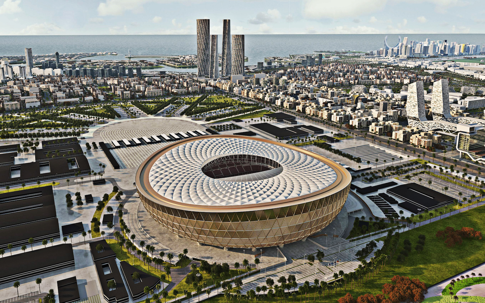
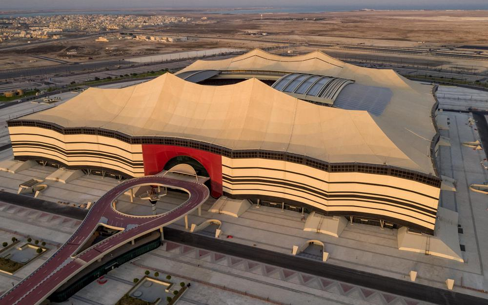
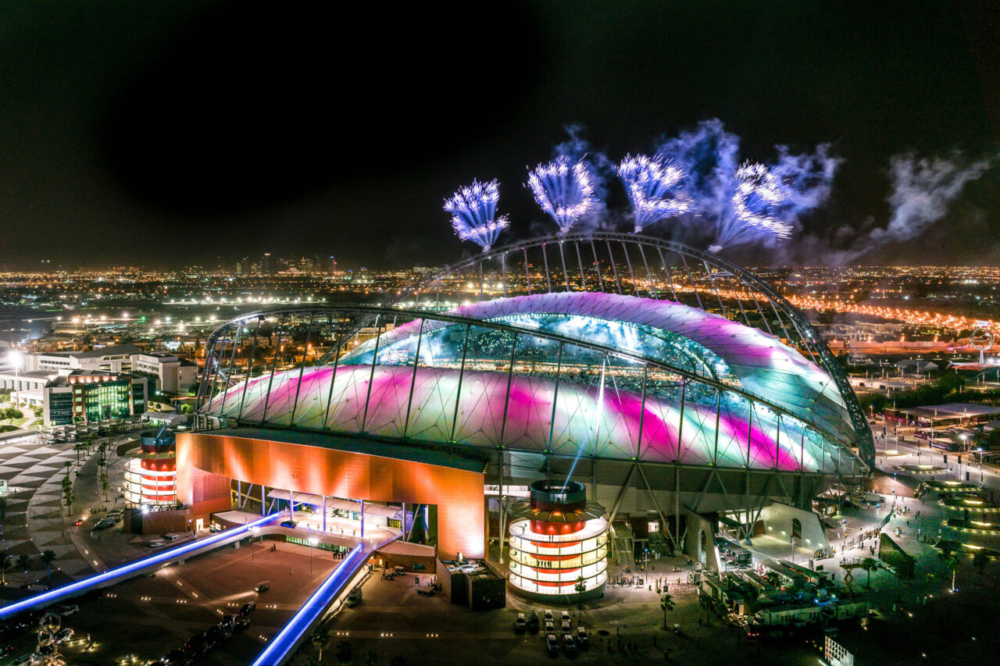
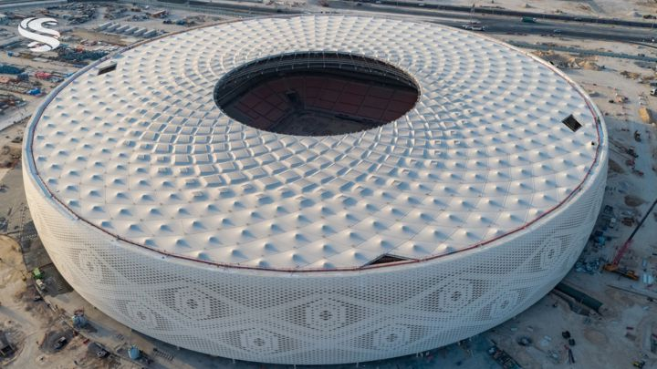
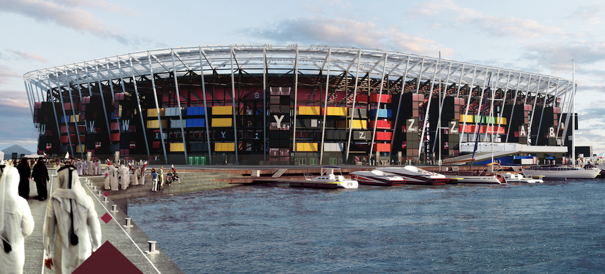

Cette arène, prête à recevoir ses gladiateurs, se trouve à Lusail, une cité implantée au nord de Doha. Littéralement implantée puisque la ville a été construite pour cette Coupe du monde.Situé à seulement 15 kilomètres de Doha, la capitale, le stade sera desservi par un métro direct depuis la capitale et sera donc facile d’accès.

Il est situé dans la ville d’Al-Khor au nord de Doha. Il peut contenir jusqu’à 60 000 personnes. Il accueillera la cérémonie d’ouverture et le premier match de ce Mondial 2022 et l’une des deux demi-finales. L’an passé, il avait reçu la cérémonie d’ouverture de la FIFA Arab Cup 2021.

Le Khalifa International Stadium est un des deux seuls stades qui existaient avant l’attribution de la Coupe du monde 2022 au Qatar. Construit en 1976, cette arène emblématique du pays a été rénovée et rouverte en 2017. Il peut accueillir un peu plus de 45 000 personnes. Le match de la 3e place y sera disputé.

L’Education City Stadium est une arène de 40 000 places située sur le campus de la principale université du Qatar. Elle accueillera des matches jusqu’aux quarts de finale de ce Mondial 2022. Sa silhouette reprend la forme d’un diamant taillé. L’édifice devrait voir sa capacité réduite de moitié après le tournoi, puisque un don de plus de 20 000 sièges doit servir à ériger des stades dans des pays en développement.
Construit sur l’ancien stade Ahmad bin Ali à Al-Rayyan, cette enceinte offre une capacité de 40 000 personnes qui va lui permettre d’accueillir des matchs jusqu’à la phase des quarts de finale. Située en bordure du désert, Al-Rayyan est la plus grande ville du pays (600 000 habitants), mais aussi l’une des plus traditionnelles. Les spectateurs pourront parcourir les quelques kilomètres qui la séparent de Doha via une ligne de métro, encore une fois créée pour la compétition.

Lui aussi prévu pour recevoir jusqu’à 40 000 personnes, l’Al-Thumama Stadium est situé à 12 km du centre de Doha. Son design s’inspire du kufi, un couvre-feu chef traditionnel en tissu porté par les hommes arabes. L’enceinte accueillera un des quatre quarts de finale. Comme beaucoup de stades construits pour cette Coupe du monde 2022, ce stade réduira sa capacité de moitié après le tournoi et fera don de plus de 20 000 sièges pour encourager la construction de stades dans les pays en développement. Il sera relié à la capitale par une ligne de métro dédiée.

C’est le stade le plus énigmatique de ce Mondial au Qatar. Doté de 40 000 places, le Ras Abu Aboud Stadium ou Stadium 974 est un exploit écologique établi sur les rives du golfe Persique. L’enceinte a été fabriquée à partir de conteneurs et autres matériaux réutilisés. Après la Coupe du monde, il sera démantelé et ses pièces serviront à d’autres projets dans le pays. Fabriqué à partir de conteneurs et d’autres matériaux réutilisés, ce stade sera démantelé après la Coupe du monde 2022 et ses pièces serviront à réaliser d’autres projets dans le pays. Le Ras Abu Aboud Stadium n’accueillera que des matches de poule et un huitième de finale.

L’Al-Janoub Stadium est une arène d’une capacité d’environ 40 000 spectateurs, conçue par l’architecte décédée Zaha Hadid, de renommée mondiale. Les courbes de l’édifice sont inspirées des coques des bateaux de pêche perlière qui ont longtemps œuvré le long des côtes de la péninsule arabique. Dans l’intégralité des stades, un système de climatisation a été installé pour faire face aux fortes températures de la région. Au total, le Qatar a dépensé pas moins de 4 milliards de dollars pour réaliser les aménagements nécessaires pour recevoir ce Mondial 2022.